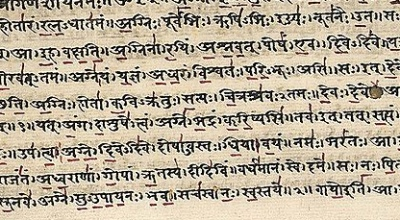

|  | Thirty Minor Upanishadstr. by K. Narayanasvami Aiyar[1914] |
This is a selection of translations from the 'minor' Upanishads. These are texts which have been incorporated into the list of 108 Upanishads, principally dealing with Yogic philosophy and practices. They describe some very esoteric concepts, and enumerate Hindu technical terminology in great detail.
Title Page
Contents
Foreword
1. Mukṭikopanishaḍ of Śukla-Yajurveḍa
2. Sarvasāra-Upanishaḍ of Kṛshṇa-Yajurveḍa
3. Nirālamba-Upanishaḍ of Śukla-Yajurveḍa
4. Maiṭreya-Upanishaḍ of Sāmaveḍa
5. Kaivalya-Upanishaḍ of Kṛshṇa-Yajurveḍa
6. Amṛṭabinḍu-Upanishaḍ of Kṛshṇa-Yajurveḍa
7. Āṭmaboḍha-Upanishaḍ of Ṛgveḍa
8. Skanḍa-Upanishaḍ of Kṛshṇa-Yajurveḍa
9. Paiṅgala-Upanishaḍ of Śukla-Yajurveḍa
10. Aḍhyāṭma-Upanishaḍ of Śukla-Yajurveḍa
11. Subala-Upanishaḍ of Śukla-Yajurveḍa
12. Ṭejobinḍu-Upanishaḍ of Kṛshṇa-Yajurveḍa
13. Brahmopanishaḍ of Kṛshṇa-Yajurveḍa
14. Vajrasūchi-Upanishaḍ of Sāmaveḍa
15. Śārīraka-Upanishaḍ of Kṛshṇa-Yajurveḍa
16. Garbha-Upanishaḍ of Kṛshṇa-Yajurveḍa
17. Ṭārasāra-Upanishaḍ of Śukla-Yajurveḍa
18. Nārāyaṇa-Upanishaḍ of Kṛshṇa-Yajurveḍa
19. Kalisanṭāraṇa Upanishaḍ of Kṛshṇa-Yajurveḍa
20. Bhikshuka-Upanishaḍ of Śukla-Yajurveḍa
21. Naraḍaparivrājaka-Upanishaḍ of Aṭharvaṇaveḍa
22. Śāṇdilya-Upanishaḍ of Aṭharvaṇaveḍa
23. Yogaṭaṭṭva-Upanishaḍ of Kṛshṇa-Yajurveḍa
24. Ḍhyānabinḍu-Upanishaḍ of Sāmaveḍa
25. Hamsa-Upanishaḍ of Śukla-Yajurveḍa
26. Amṛṭanāḍa-Upanishaḍ of Kṛshṇa-Yajurveḍa
27. Varāha-Upanishaḍ of Kṛshṇa-Yajurveḍa
28. Maṇdalabrāhmaṇa-Upanishaḍ of Śukla-Yajurveḍa
29. Nāḍabinḍu-Upanishaḍ of Ṛgveḍa
30. Yogakuṇdalī-Upanishaḍ of Kṛshṇa-Yajurveḍa
Index of Proper Names